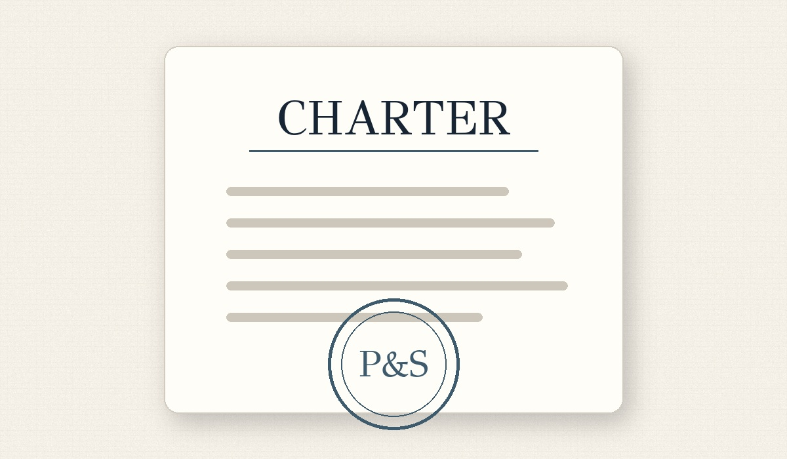

Announcement
Introducing Paper & Slate
Why common educational infrastructure should be open, neutral, and shared.
Read →Announcements, RFC notices, project updates, releases, governance decisions, implementation stories, and community contributions.
Why common educational infrastructure should be open, neutral, and shared.
Read →
A proposed structure for educational documents and reusable content blocks.
Read →
A central docs experience assembled from project-owned source files.
Read →
Founder stewardship now, maintainers from launch, and a path to committee governance.
Read →
Early decisions around identifiers, hierarchy, provenance, and extensions.
Read →
Developers, educators, and institutions are invited to review the first project briefs.
Read →